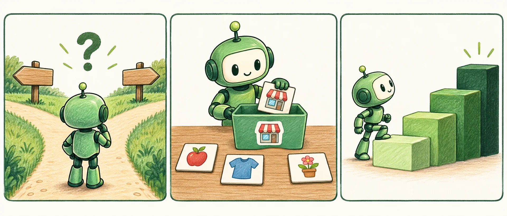

이 지역은 음식점이 꽤 많은 편으로 보이며, 경쟁이 다소 치열할 수 있습니다. 다만 유동인구나 임대료 같은 요소에 따라 달라질 수 있으니 상황에 맞게 판단하시는 게 좋겠습니다. 전반적으로는 신중한 접근이 필요해 보입니다.
- “꽤 많은 편”은 몇 %일까요?
- 다시 물으면 표현이 달라질 수 있어요.
- 표나 코드에 옮기려면 사람이 해석해야 해요.
전국 상가업소 데이터를 직접 비교하고, 내 창업 아이디어에 필요한 다음 조사를 정하는 입문자용 실습 앱입니다. 긴 글 대신 정해진 형식의 답을 받는 JEV의 방식을 직접 체험합니다.
“이 지역에 음식점이 많은 편인가요?”라고 물었다고 생각해 보세요. 일반 대화형 AI는 문장으로 답하고, JEV는 우리가 미리 정한 선택지와 확률로 답합니다.
이 지역은 음식점이 꽤 많은 편으로 보이며, 경쟁이 다소 치열할 수 있습니다. 다만 유동인구나 임대료 같은 요소에 따라 달라질 수 있으니 상황에 맞게 판단하시는 게 좋겠습니다. 전반적으로는 신중한 접근이 필요해 보입니다.
{
"market_pattern": {
"type": "choice",
"choice": "crowded",
"confidence": 0.71,
"probabilities": {
"crowded": 0.71, "mixed": 0.18,
"relatively_sparse": 0.04, "insufficient": 0.07
}
}
}위 두 답변은 개념을 보여 주는 설명용 예시입니다. 실제 JEV 응답은 아래 실습실에서 API 키로 확인하세요.
여러 지역을 비교하려면 답을 같은 칸에 모아야 합니다. 버튼을 눌러 결과를 비교해 보세요.
| 답변 방식 | 상권 특성 | 확신 정도 | 다른 가능성 | 옮기는 방법 |
|---|---|---|---|---|
| 대화형 | — | — | — | — |
| JEV | — | — | — | — |
선택지·단계·예/아니요처럼 답의 모양을 먼저 정합니다. 엉뚱한 형식의 답을 걸러 내기 쉽습니다.
하나의 결론만이 아니라 다른 선택지의 확률도 받습니다. 0.51과 0.95는 같은 “예”가 아닙니다.
상권 특성, 조사 우선순위, 추가 근거 필요 여부를 한 요청에 묶어 보냅니다.
모든 결과가 같은 구조라 여러 지역을 한 표로 모으고 CSV로 내보낼 수 있습니다.
슬라이더를 움직여 확률이 바뀌면 해석이 어떻게 달라지는지 확인하세요. 숫자는 연습용입니다.

그림은 개념 설명용 생성형 삽화입니다. 실제 JEV 응답이나 상권 통계는 아래에서 확인하세요.
숫자·메모 등
판단 재료
유형·지시문·기준
(내가 설계)
/v1/systemone
질문 키별
구조화된 답
두 AI의 역할을 나누면 서로의 약점을 보완할 수 있습니다. 실습실에서 JEV 분석 뒤 Gemini 종합 상담으로 이어집니다.
시군구의 업종 점포 비중을 해당 시도 전체와 비교합니다.
업종은 대분류 10종입니다. 더 세부적인 업종은 원본 저장소에서 확인할 수 있습니다.
업종 이름을 누르면 해당 업종으로 바뀝니다.
비중 = 선택 업종 점포 수 ÷ 해당 지역의 전체 점포 수. 이 수치에는 인구·면적·매출이 반영되지 않습니다.
이 지역을 고른 이유와 직접 확인할 점을 적어 주세요. 사례 버튼으로 연습 메모를 불러올 수 있습니다.
같은 업종으로 비교할 시군구를 고르면 JEV가 먼저 방문할 곳을 후보 중에서 고릅니다.
묶음마다 JEV 요청 한 번에 여러 질문을 담아 동시에 보냅니다. 모든 답은 같은 형식이라 한 화면에서 비교할 수 있습니다.
키는 브라우저 저장소에 보관하지 않고 요청 중에만 사용합니다. Netlify 함수가 TypeSafe API로 전달합니다.
숫자(state)와 질문(questions)이 어떻게 묶이는지 보세요. API 키는 포함하지 않습니다.
JEV 기준별 점수를 0~1로 바꿔(경쟁 압력은 뒤집어) 아래 가중치로 평균한 값입니다. ± 값은 JEV가 준 단계별 확률에서 계산한 불확실성입니다. 계산은 이 화면에서 투명하게 합니다.
가중치를 바꾸면 매력도가 바로 다시 계산됩니다(JEV를 다시 부르지 않음). 막대의 옅은 띠는 JEV 확률로 본 ±1 표준편차 범위입니다.
점수가 높을수록 JEV가 새 점포가 들어갈 여지가 크다고 본 업종입니다. 이름을 누르면 그 업종으로 바꿔 다시 볼 수 있습니다(결과는 초기화됩니다).
| 기준 | JEV 판단 | 단순 규칙 | 근거 숫자 | 결과 |
|---|
규칙과 1.2 이상 차이 나면 “다시 보기”로 표시합니다. JEV가 틀렸다는 뜻이 아니라, 여러 숫자를 함께 읽은 JEV와 한 가지 공식이 달리 본 곳이니 근거를 한 번 더 확인하라는 신호입니다.
결과와 메모를 바탕으로 자동으로 만든 초안입니다. 직접 고치고 더해 보세요.
JEV의 점수와 확률은 창업 성공률이 아닙니다. 임대료, 실제 매출, 유동인구, 고객 수요와 경쟁점의 품질을 별도로 조사해 주세요.
API 키는 포함하지 않습니다. Noul은 예/아니요 확률, Choice는 선택지와 확률, Score는 단계별 점수와 확률입니다.
Gemini가 JEV의 기준별 판단을 근거 숫자와 하나씩 대조해 확인하고, 이해하기 쉬운 말로 설명합니다.
점포 수 · 입지계수 · 순위
8개 질문 · 확률
설명 · 상담 · 대화
현장에서 확인
역할 나누기: JEV는 정해진 질문에 형식이 고정된 판단과 확률을 주고, Gemini는 그 판단을 근거로 글을 씁니다. 판단을 먼저 구조화해 두면 상담 글이 어떤 숫자에 기대고 있는지 추적할 수 있습니다.
키는 브라우저 저장소에 보관하지 않고 요청 중에만 사용합니다. Netlify 함수가 Google Gemini API로 전달합니다. 호출 비용과 한도는 본인 계정에 따릅니다.
Gemini의 글은 JEV 판단과 공공데이터 수치를 근거로 한 교육용 상담입니다. 문장이 그럴듯해도 숫자 근거가 있는지 확인하고, 실제 결정은 현장 조사로 검증하세요.
공공데이터 지표와 JEV 결과가 어떻게 글감으로 바뀌는지 보세요. API 키는 포함하지 않습니다.
분석 결과를 저장하면 같은 칸에 차곡차곡 쌓입니다. 답의 구조가 같기 때문에 가능한 일입니다. 이 브라우저에만 저장되며 API 키는 저장하지 않습니다.
| # | 지역 · 업종 | 지역 비중 | 시도 비중 | 상권 특성 (Choice) | 조사 우선순위 (Score) | 추가 근거 필요 (Noul) | 상권 성격 | 매력도 | 직접 만든 질문 | 방식 |
|---|
아직 저장한 결과가 없습니다. 실습실에서 키 없이 예시 보기를 누른 뒤 비교 보드에 저장을 눌러 보세요. 서로 다른 지역 2~3곳을 저장하면 차이가 잘 보입니다.
JEV의 핵심은 질문을 설계하는 사람입니다. 유형과 기준을 정하면 형식 검사를 통과한 질문만 보낼 수 있습니다. 완성한 질문은 실습실 분석에 함께 보낼 수 있습니다.
체크하면 03단계의 예시·실제 분석에 이 질문이 추가됩니다. 예시 모드의 값은 의미 없는 자리표시 값입니다.
숫자와 확률을 올바르게 읽었는지 확인해 보세요.
문제를 풀면 점수가 표시됩니다.
서로 다른 두 지역의 같은 업종을 고르고 비중과 시도 안 순위를 비교합니다.
숫자에 없는 정보 한 가지를 창업 메모에 적습니다. 메모에 담긴 근거 표시를 확인합니다.
JEV의 Choice·Score·Noul 결과와 확률 분포를 읽고 비교 보드에 저장합니다.
체크리스트를 고쳐 현장 질문 세 개를 쓰고, 나만의 질문을 설계해 봅니다.